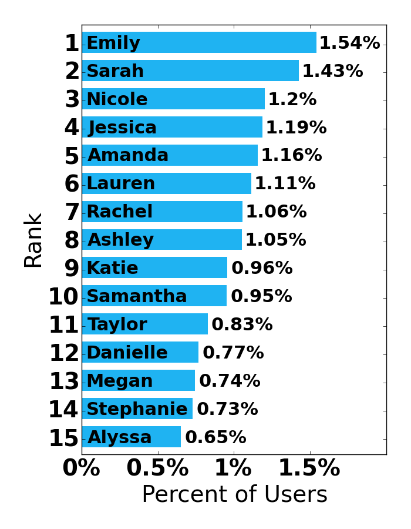
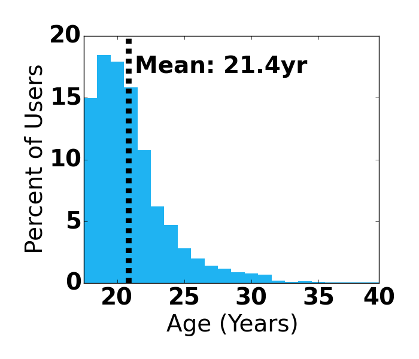
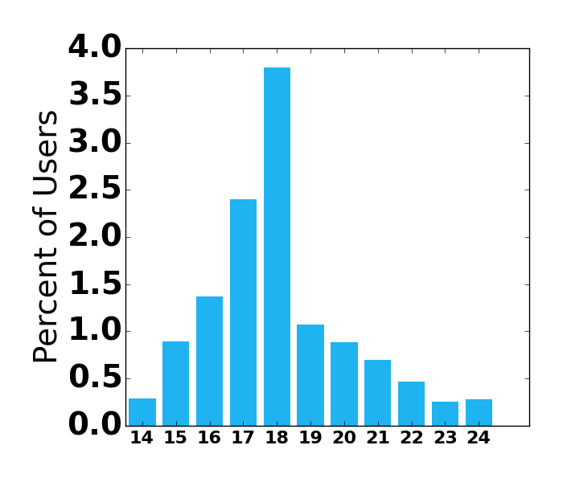
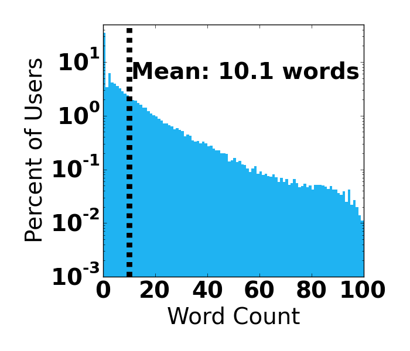
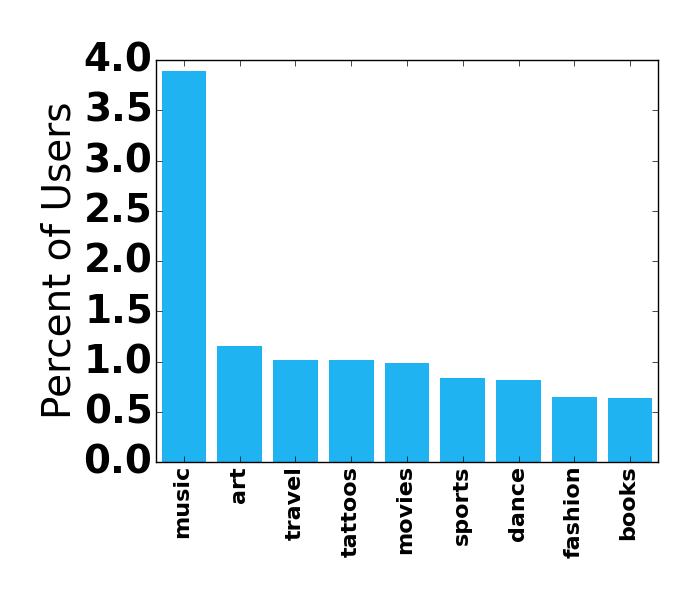
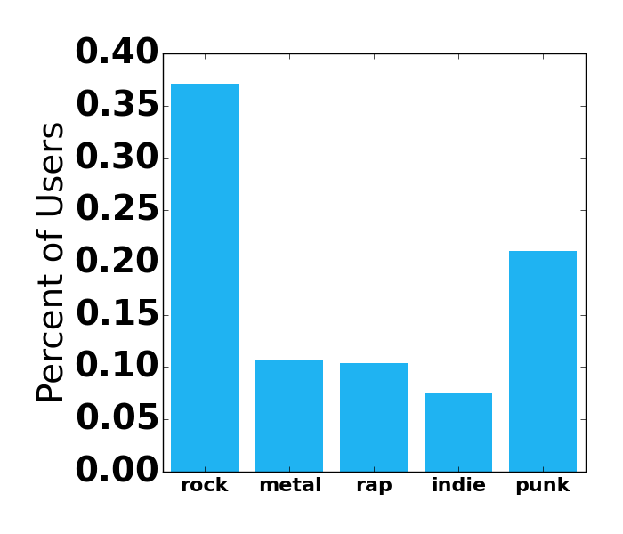
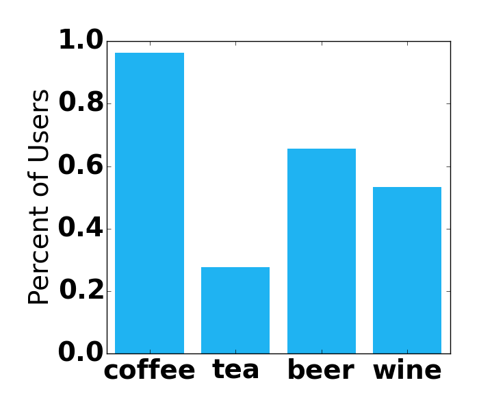
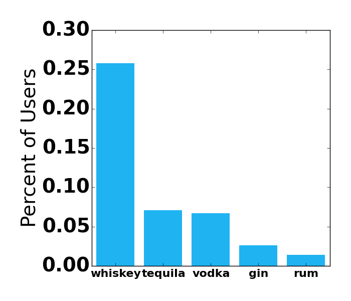
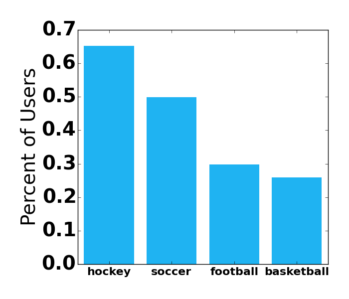
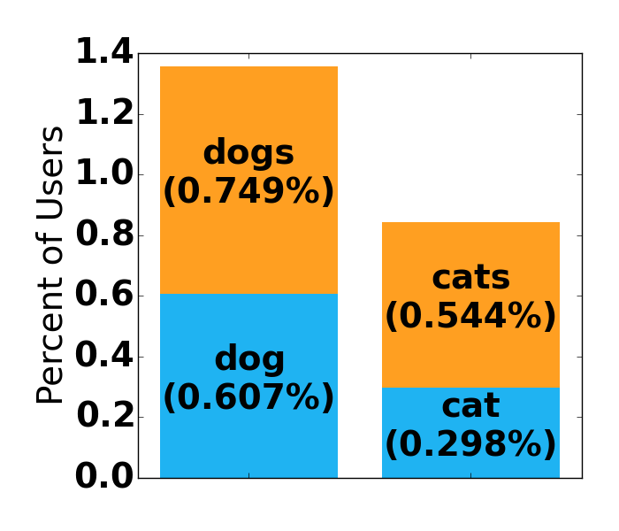

Dan Kolbman
Dan Kolbman
Meet Emily: The Average Tinder Girl
Thu 08 January 2015
Here I go through some data I've collected from Tinder biographies. If you're interested in how the data was collected, or you want to analyze or collect your own data, you can get the scripts and some sample data I've collected here.
If you're interested in how the composite average was generated, check out Picturing the Average Tinder Girl.

Meet Emily. A 21 year old, white, brunette who uses Tinder. She drinks coffee and enjoys music. She likes wine almost as much as she does beer, and she favors whiskey as far as liquor is concerned. She is the product of 100,065 Tinder profiles.
Collecting the data
It turns out that the Tinder API is pretty easy to exploit. It only requires a Facebook account with a connected Tinder app to verify and get a auth token. After that, all the calls used by the actual app become available to us and we're free to wreck whatever havoc we like.
My bot for data collection is pretty simple. It requests suggestions from Tinder, which will return a short list of profiles. Then the bot runs through the list and saves all the JSON data for the users, 'swiping' them along the way so they don't come back in the future. It's all rinse and repeat from here, and after a while, you end up with a bunch of profile data.
Profile data consists of a bunch of fields: Name, age, pictures, last activity, biography, and more. Below I report some statistics on names, ages, and bio data that I've collected from 100,065 profiles.
What's her name
After a quick analysis, the most common name was Emily, followed closely by Sarah.

This doesn't include any variations of the names. For example, I found seven variations of Emily: Emilie, Emilee, Emi, Emile, Emili, Emleigh, and Emillie. To sort through all of the possible variations would be a pain, and considering each of the top five are all pretty variable, I'll assume that this list is a good representation of the distribution. It might be interesting to inspect each name and look at how many variates each one has, but again, that would require a lot of hand sifting, so I won't do that here.
How old is she
The next obvious question is her age. Well the age distribution of female Tinder profiles looks like this:

So she's 21 according to the Tinder dates. However, I after inspecting bios, I found something that may challenge this. I looked at the mentions of the numbers 14-24 on Tinder bios. Now, Tinder users will know that there is often two occasions in which a user will mention a number like this. One is when mentioning graduating class, ie 'nyu 16'. The other is when the user is correcting the age shown on their profile, ie 'I'm actually 18' (I believe this is often due to users lying about their age in order to create a Facebook account when their younger). Either way, we could infer something about age from either of these cases. Here's what that distribution looks like across users:

First thing we can note about this is the sudden drop in frequency when we get to 19. At first glance, I'd say that this is some supporting evidence that the mention of these numbers in bios is mostly users mentioning class year. But if we consider that the class of 2018 also corresponds to a demographic of mostly 18 year olds. We could either make the conclusion that 'Users tend to state their class year in their profile with freshmen being more likely to than seniors' or we could just as validly say that 'Users tend to correct their age on their profile with 18 year olds doing so the most and 14 year olds the least'. Therefore, it's inconclusive as to which statement is correct.
But there is one thing that this says that disagrees with the age reported by Tinder, and that's the fact that 18 is mentioned the most. Remember that 18 corresponds to an age of 18 by either of the above cases. We should then think that the most common age should be 18, not 19. Of course there's a lot of other things to consider, like users who are 18 feel compelled to list their age. I would conclude that overall, the evidence points to the actual mean age being lower than that reported by Tinder, but I'd take it with a grain of salt.
What are her interests
Perhaps the most interesting data we can look at is in the user biographies. First off, it's interesting to note that 53% of users had less than five words in their bio. It seems like a lot of wasted opportunity there. The distribution shows that the length decays sub exponentially up to about 80 words, where it just dies off (note logarithmic scale).

So then, let's look more closely at some details of the biographies. To do this, I've looked at the word frequencies and compare them to the number of users as to represent the number of users that use a word in their profile. The actual word per percentage of users might be a little less than this, considering someone might use a word multiple times, but I've assumed this unlikely and take it to be a good estimate.
My data parser spits out file of words with the number of times that word was used (sorted by use count). I scanned this file to find common words that might fit part of a general and correlate them to imply things about the popularity of something.
For instance, I started by looking at popular interests like the following:

Well music is certainly far ahead of anything else. We can conclude that many Tinder users enjoy music. But just 'music' is rather ambiguous. Here are some of the more popular genres I could find in the list.

Country comes out with a strong lead with more than twice that of rock. Of course country is also often used as a identifier, ie 'I'm just a country gal', but they go hand in hand for the most part. Again, this popularity likely comes from one of the major demographics (upstate NY) in the data. Rock and punk could also be used as adjectives unrelated to genre as well. Overall, we can get some deeper interpretation of popular genres from this, but it shouldn't be taken too seriously.
Beverages
Coffee was the obvious winner over tea, but surprisingly, beer came out just above wine, though still not as popular as coffee. 
As for liquor, it was pleasant to find that whiskey trumped all. In fact, the others are mentioned so infrequently that I hesitate to call them statistically meaningful.

Sports
Hockey seems like it must be another demographic issue, but it could also be the fact that field hockey is also included in this statistic. 
Dogs are the clear favorite amongst users, which is not that surprising. If I took the time to train a classifier to identify dogs, I bet I could find a dog in nearly half of all profiles.
